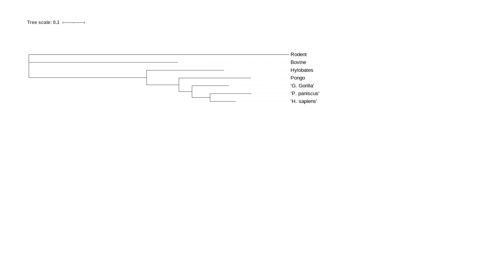
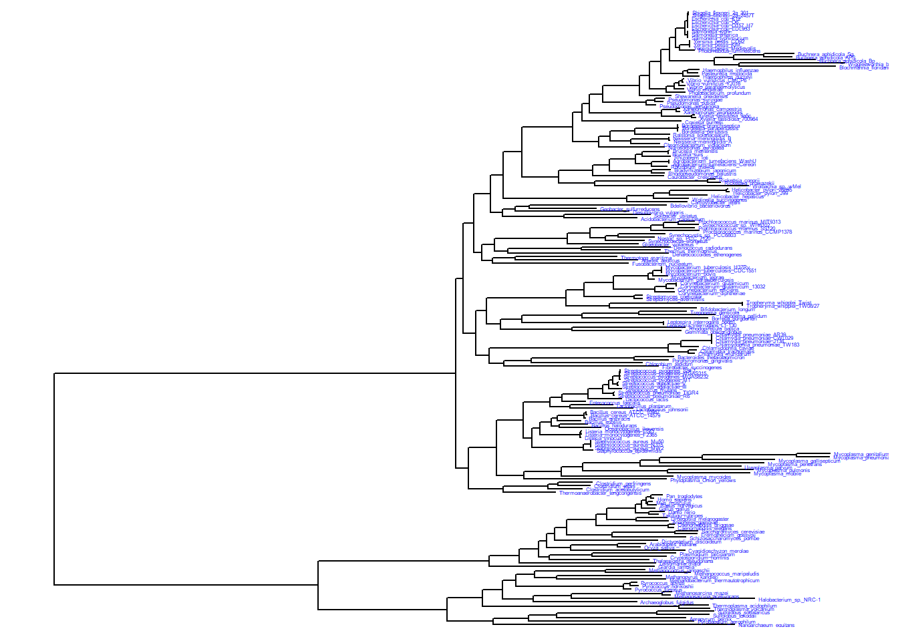
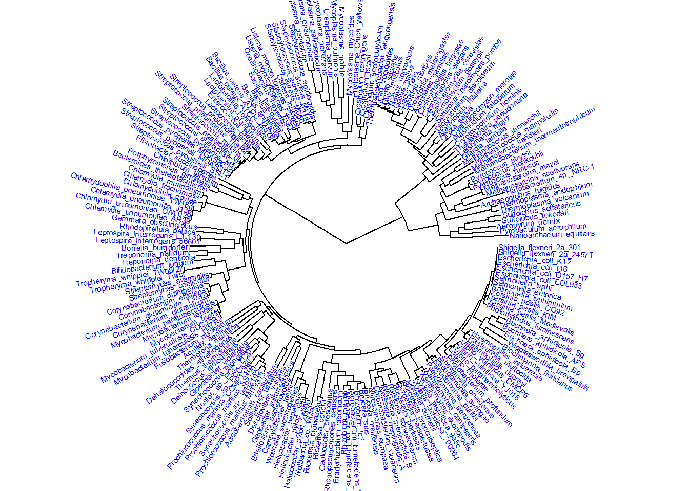
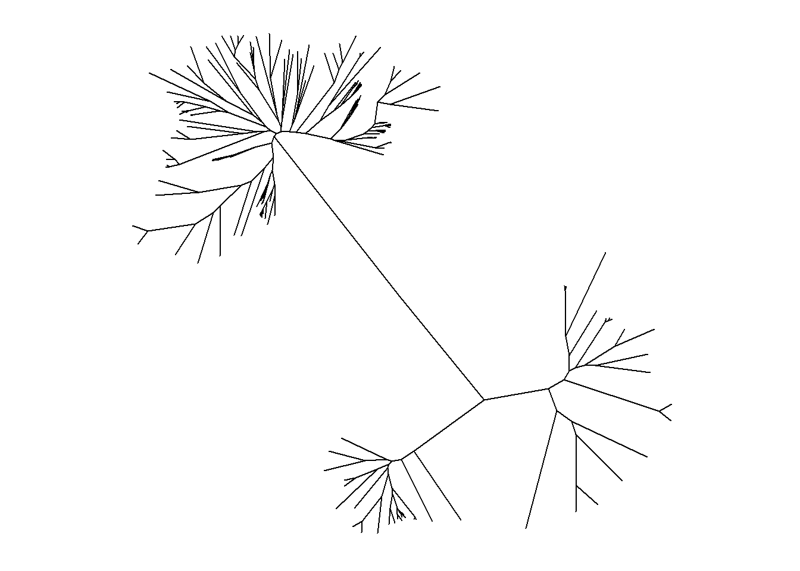
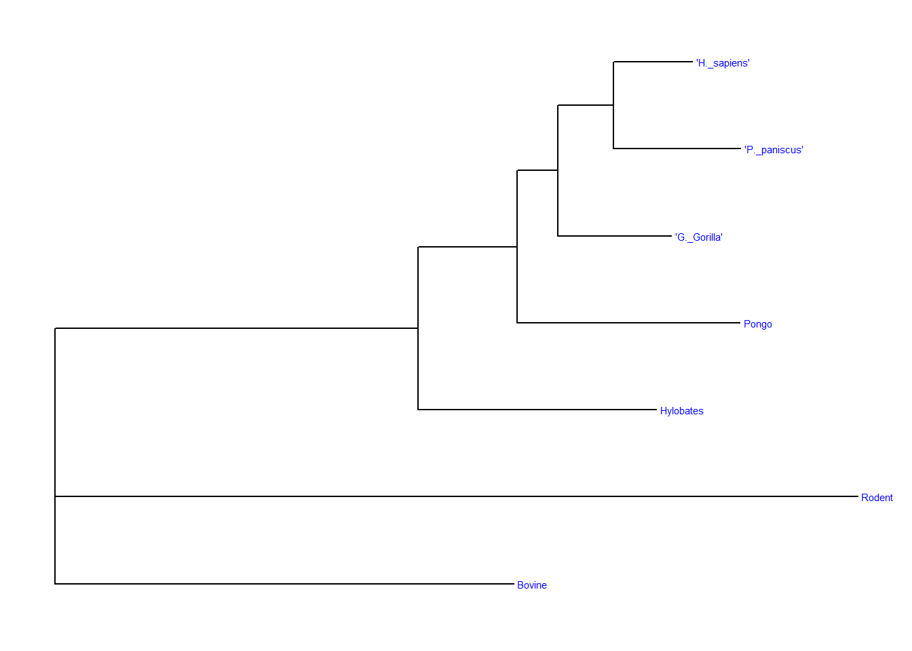

library(rbioinfcookbook)
library(SGSeq)
library(ape)
library(treeio)
library(ggplot2)
library(ggtree)Phylogeny
This exercise brought me through the process of making phylogenetic trees in R.
File Functionality
Files for phylo trees can come in several different file types when working in R. Two of these are newick and nexus, which may be the most common.
newick_file_path <- fs::path_package("extdata", "mammal_tree.nwk", package = "rbioinfcookbook" )
nexus_file_path <- fs::path_package("extdata", "mammal_tree.nexus", package = "rbioinfcookbook")
newick <- ape::read.tree(newick_file_path)
nexus <- ape::read.nexus(nexus_file_path)BEAST and RAxML are two software programs used to produce trees from genetic data. They have their own unique file types that can be read with certain packages.
beast_file_path <- fs::path_package("extdata", "beast_mcc.tree", package = "rbioinfcookbook")
raxml_file_path <- fs::path_package("extdata", "RAxML_bipartitionsBranchLabels.H3", package = "rbioinfcookbook")
beast <- read.beast(beast_file_path)
raxml <- read.raxml(raxml_file_path)Using the class() function (native to R), I can figure out what type of data each object is holding. This is important to distinguish when you’re pulling from different file types.
class(newick)[1] "phylo"class(nexus)[1] "phylo"class(beast)[1] "treedata"
attr(,"package")
[1] "tidytree"class(raxml)[1] "treedata"
attr(,"package")
[1] "tidytree"Newick and nexus are holding phylo objects, and beast and raxml are holding treedata objects that depend on the tidytree package.
The two can be interchangable since there are treeio functions that can convert phylo objects to treedata or vice versa.
beast_phylo <- treeio::as.phylo(beast)
newick_tidytree <- treeio::as.treedata(newick)Lastly, I can use write.beast() or write.nexus() to make new files, exporting the converted newick data as a beast file and the converted beast data as a newick file.
This process can make R an easy intermediary when using different software to compare generated trees with one another.
treeio::write.beast(newick_tidytree, file = "mammal_tree.beast")
ape::write.nexus(beast_phylo, file = "beast_mcc.nexus")
After uploading the data to IToL, this is the figure that was produced.
Tree Visualization in R
tree_file <- fs::path_package("extdata", "itol.nwk", package = "rbioinfcookbook")
itol<- ape::read.tree(tree_file)ggtree(itol)
itol |>
ggtree() +
geom_tiplab(color = "blue", size = 1)
itol |>
ggtree(layout = "circular") +
geom_tiplab(color = "blue", size = 2)
ggtree(itol) +
coord_flip() +
scale_x_reverse()
ggtree(itol, layout = "unrooted")"daylight" method was used as default layout for unrooted tree.Average angle change [1] 0.174910612627282Average angle change [2] 0.161645191380673Average angle change [3] 0.129304375923319Average angle change [4] 0.0825706767962636Average angle change [5] 0.100056259084497
Visualizing Smaller Trees
mammal_file <- fs::path_package("extdata", "mammal_tree.nwk", package = "rbioinfcookbook" )
mammal<- ape::read.tree(mammal_file)ggtree(mammal) +
geom_tiplab(color = "blue", size = 2)
ggtree(mammal, layout = "circular") +
geom_tiplab(color = "blue", size = 2)